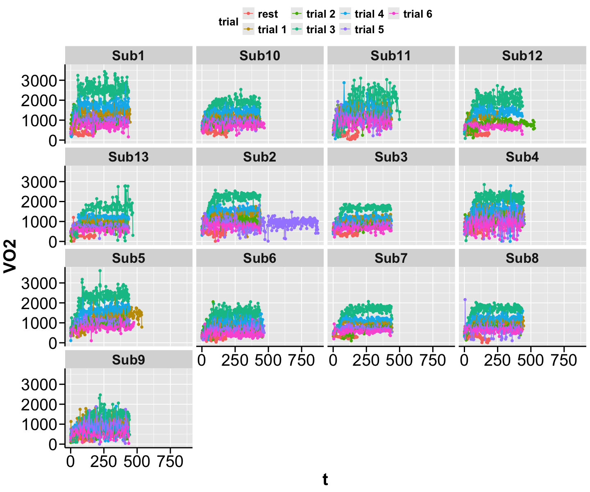
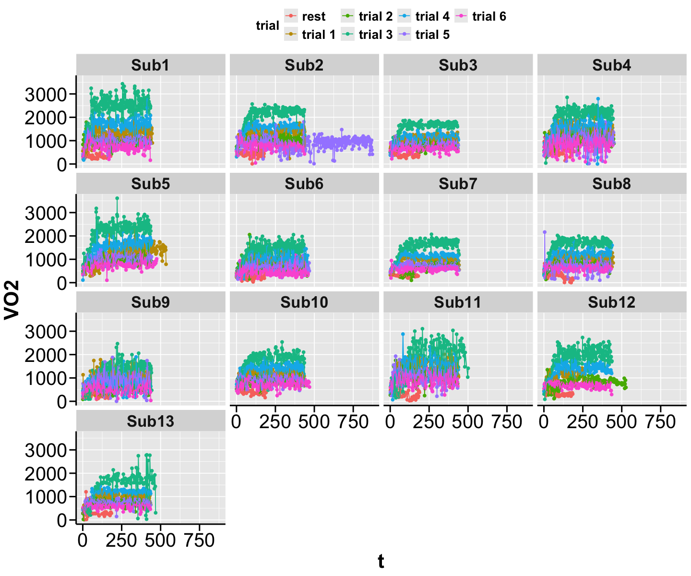
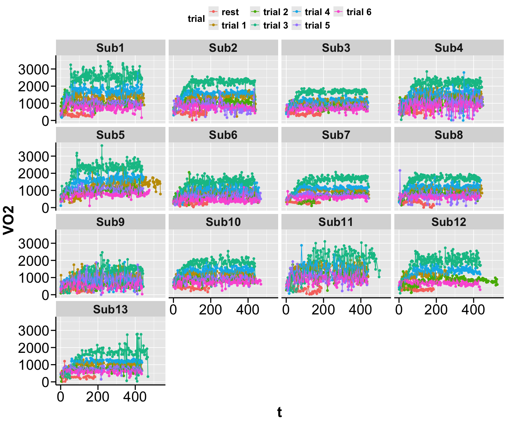
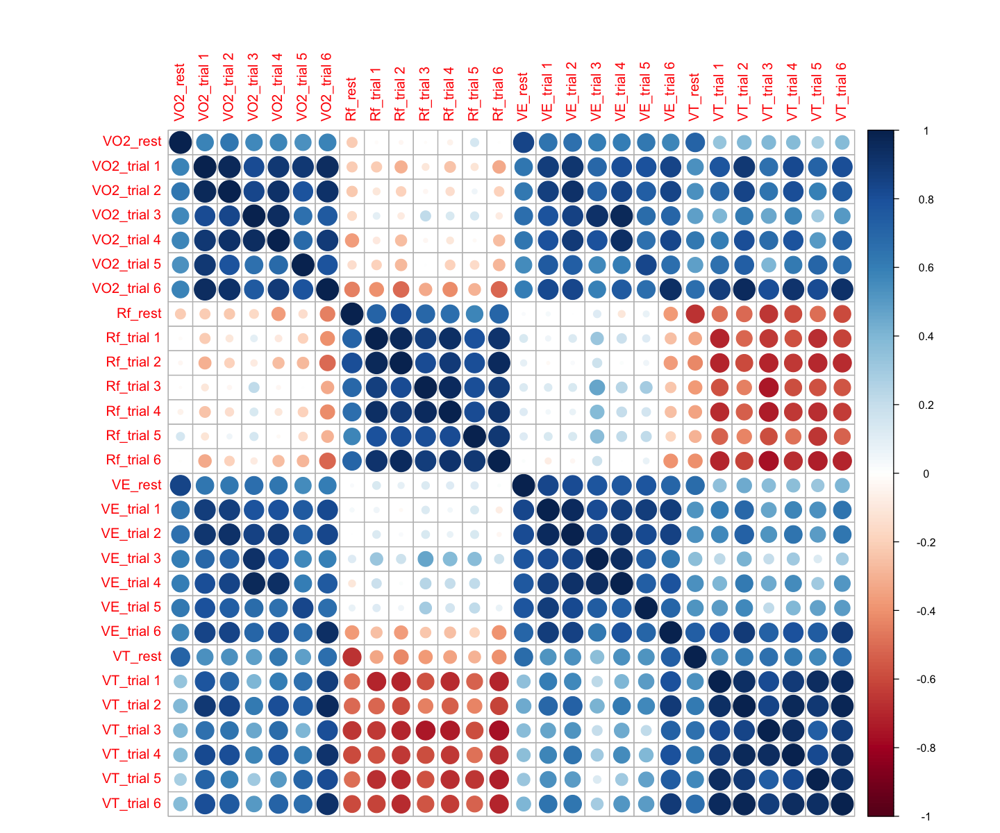
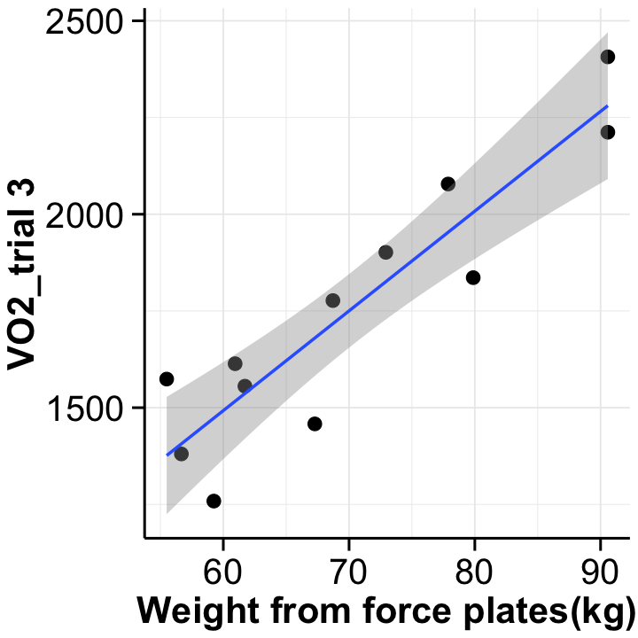
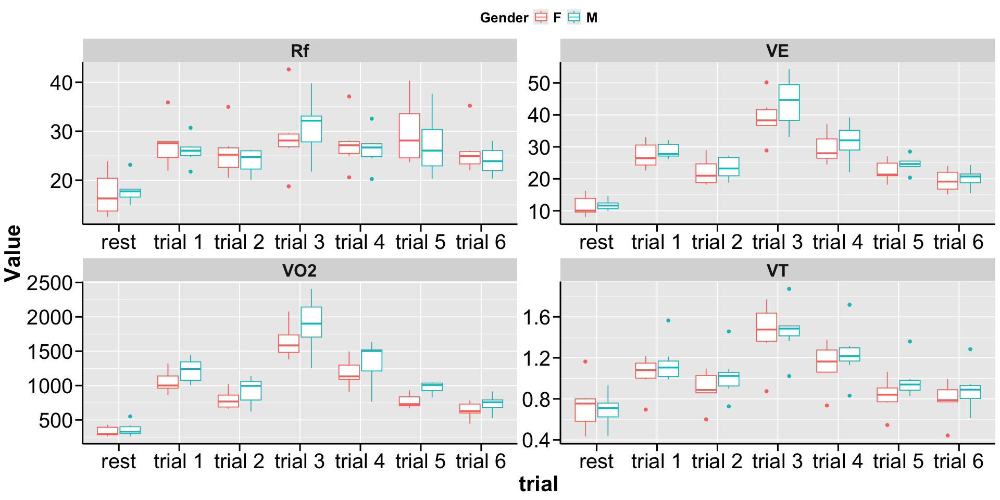

Week 3: Clean and Merge Data#
In Week 2, we combined individual raw data files into one comprehensive table. Now, we will merge this table with additional data, such as demographics, to prepare for analysis.
Currently, the table is in long format: time points are nested within each trial, and trials are nested within each subject (see figure for wide vs long formats).
This lesson will cover:
Basic data cleaning
Converting between long and wide data formats
Merging with a separate demographic table
Aggregating the data table
Using plots for data validation

Clean the entire workspace#
rm(list=ls())
Load required libraries#
ReqdLibs = c("here","ggplot2","ggthemes","dplyr","tidyr","corrplot","readxl","IRdisplay")
invisible(lapply(ReqdLibs, library, character.only = TRUE))
here() starts at /Users/rinivarghese/Documents/My Documents/JHU-KKI/Lab/Professional-Dev/ReproRehab/02_Bootcamp/ReproRehab_Bootcamp
Attaching package: ‘dplyr’
The following objects are masked from ‘package:stats’:
filter, lag
The following objects are masked from ‘package:base’:
intersect, setdiff, setequal, union
corrplot 0.95 loaded
Theme defaults#
thm = theme(
strip.text.x=element_text(size=20,face="bold"),
strip.text.y=element_text(size=20,face="bold"),
legend.text=element_text(size=16,face="bold"),
legend.position = "top",
legend.title=element_text(size=16,face="bold"),
title =element_text(size=14, face='bold'),
text = element_text(colour = "black",size=18),
plot.title = element_text(colour = "black",size = 22, face = "bold"),
axis.ticks.length = unit(0.3,"cm"),
axis.line = element_line(colour = "black",linewidth = 0.85),
axis.ticks = element_line(colour = "black",linewidth = 0.85),
axis.text = element_text(colour = "black",size=24),
axis.title=element_text(size=25))
Read data#
I previously saved the parent data set as a .csv I am now reading it in here.
data.all=read.csv("raw.data.all.csv")
head(data.all)
# data.all
| X | t | Rf | VT | VE | VO2 | Sub | trial | |
|---|---|---|---|---|---|---|---|---|
| <int> | <int> | <dbl> | <dbl> | <dbl> | <dbl> | <chr> | <chr> | |
| 1 | 1 | 2 | 18.51852 | 0.7548531 | 13.97876 | 408.6987 | Sub1 | rest |
| 2 | 2 | 5 | 20.97902 | 0.5538989 | 11.62026 | 304.7868 | Sub1 | rest |
| 3 | 3 | 8 | 18.23708 | 0.7058896 | 12.87337 | 347.7043 | Sub1 | rest |
| 4 | 4 | 10 | 25.53191 | 0.7823950 | 19.97604 | 614.8135 | Sub1 | rest |
| 5 | 5 | 13 | 21.97802 | 0.4957548 | 10.89571 | 253.6431 | Sub1 | rest |
| 6 | 6 | 16 | 18.92744 | 0.7874953 | 14.90527 | 437.0967 | Sub1 | rest |
Start by visualizing#
Plots across the time series by subject
options(repr.plot.width = 12, repr.plot.height = 10)
ggplot(data.all,aes(x=t,y=VO2,color=trial))+
geom_point()+
geom_line()+
facet_wrap(~Sub) + thm

Some initial issues#
Issue 1: R naming convention#
R still thinks my subjects are listed based on the value of the first integer. We need to change this first so it displays numerically.
display_markdown("**Note that at present the `Sub` variable is of character class.** So, when you look for the levels of this variable, you see the output as being NULL, as character class does not have levels.**")
class(data.all$Sub)
levels(data.all$Sub)
display_markdown("**But I can convert it to a factor.** This factor now has levels, and I can set the ordering for this variable as I want them to be.**")
data.all$Sub=factor(data.all$Sub,levels = c("Sub1","Sub2","Sub3","Sub4",
"Sub5", "Sub6","Sub7","Sub8",
"Sub9","Sub10","Sub11","Sub12",
"Sub13"))
#This is more desireable anyway because a factor class is treated as a categorical variable
# when you run regressions or other statistical analyses.
class(data.all$Sub)
levels(data.all$Sub)
Note that at present the Sub variable is of character class. So, when you look for the levels of this variable, you see the output as being NULL, as character class does not have levels.**
NULL
But I can convert it to a factor. This factor now has levels, and I can set the ordering for this variable as I want them to be.**
- 'Sub1'
- 'Sub2'
- 'Sub3'
- 'Sub4'
- 'Sub5'
- 'Sub6'
- 'Sub7'
- 'Sub8'
- 'Sub9'
- 'Sub10'
- 'Sub11'
- 'Sub12'
- 'Sub13'
visualize again after fixing this issue#
#Fixed
ggplot(data.all,aes(x=t,y=VO2,color=trial))+
geom_point()+
geom_line()+
facet_wrap(~Sub) + thm

Issue 2: Inconsistent number of points across trials#
Sub 2 took way more time than everyone else on trial 5. I am going to assume
that doesn’t warrant throwing that subjects data out, and instead I will just
trim the excess away.
To do that, let’s first see how much of the extra to remove. Let’s look at how long all subject’s trial 5 was. The function aggregate will provide some summary stat based on how I want the dataset aggregated. Here I just want the max time for trial 5 across all subjects. To reduce the output I just index the data.all to only include trial 5. Looks like Sub 2 did 873 seconds, and everyone else did ~440
aggregate(t~Sub,data.all[data.all$trial=="trial 5",],max) #%>% mutate(a = median(.$t))
| Sub | t |
|---|---|
| <fct> | <int> |
| Sub1 | 436 |
| Sub2 | 873 |
| Sub3 | 437 |
| Sub4 | 449 |
| Sub5 | 443 |
| Sub6 | 468 |
| Sub7 | 441 |
| Sub8 | 433 |
| Sub9 | 433 |
| Sub10 | 436 |
| Sub11 | 433 |
| Sub13 | 435 |
trim the data#
I am going to remove all t for Sub 2 greater than 440. I am going to use a method called negation !(). Here I put in a bunch of boolean arguments into () and then preceed it with a !. This removes all the rows in my dataset that match these conditions.
Note that if I removed the !() it would only return the trial 5, for Sub2 with t > 440
display_markdown("**using base R**")
# using base R
data.all2 = data.all[!(data.all$trial=="trial 5" & data.all$Sub=="Sub2" & data.all$t>440),]
head(data.all2)
display_markdown("**using dplyr**")
# using dplyr
data.all2 <-
data.all %>%
filter(!(trial=="trial 5" & Sub=="Sub2" & t>440))
head(data.all2)
using base R
| X | t | Rf | VT | VE | VO2 | Sub | trial | |
|---|---|---|---|---|---|---|---|---|
| <int> | <int> | <dbl> | <dbl> | <dbl> | <dbl> | <fct> | <chr> | |
| 1 | 1 | 2 | 18.51852 | 0.7548531 | 13.97876 | 408.6987 | Sub1 | rest |
| 2 | 2 | 5 | 20.97902 | 0.5538989 | 11.62026 | 304.7868 | Sub1 | rest |
| 3 | 3 | 8 | 18.23708 | 0.7058896 | 12.87337 | 347.7043 | Sub1 | rest |
| 4 | 4 | 10 | 25.53191 | 0.7823950 | 19.97604 | 614.8135 | Sub1 | rest |
| 5 | 5 | 13 | 21.97802 | 0.4957548 | 10.89571 | 253.6431 | Sub1 | rest |
| 6 | 6 | 16 | 18.92744 | 0.7874953 | 14.90527 | 437.0967 | Sub1 | rest |
using dplyr
| X | t | Rf | VT | VE | VO2 | Sub | trial | |
|---|---|---|---|---|---|---|---|---|
| <int> | <int> | <dbl> | <dbl> | <dbl> | <dbl> | <fct> | <chr> | |
| 1 | 1 | 2 | 18.51852 | 0.7548531 | 13.97876 | 408.6987 | Sub1 | rest |
| 2 | 2 | 5 | 20.97902 | 0.5538989 | 11.62026 | 304.7868 | Sub1 | rest |
| 3 | 3 | 8 | 18.23708 | 0.7058896 | 12.87337 | 347.7043 | Sub1 | rest |
| 4 | 4 | 10 | 25.53191 | 0.7823950 | 19.97604 | 614.8135 | Sub1 | rest |
| 5 | 5 | 13 | 21.97802 | 0.4957548 | 10.89571 | 253.6431 | Sub1 | rest |
| 6 | 6 | 16 | 18.92744 | 0.7874953 | 14.90527 | 437.0967 | Sub1 | rest |
visualize again after fixing the issue#
#Fixed
ggplot(data.all2,aes(x=t,y=VO2,color=trial))+
geom_point()+
geom_line()+
facet_wrap(~Sub) + thm
#I could repeat this process again but let's move on.

Pivoting: Converting data tables from long to wide format and vice versa#
Now I am going to convert the data from long to wide format using the pivot functions in the tidyr library. This can be useful if I want to look at correlations between my behavioral variables.
There are various situations where one format is preferable to others. Note: when in doubt, remember the tidy data format; each row is an independent observation and each column is a variable of interest. You should never stack numbers along rows of a column that do not share the same units.
First, I am going to create an aggregate of the data#
This creates a summarized data set across our 4 outcome variables average across time for each subject for each trial
# using base R:
display_markdown("**using base R**")
data.agg = aggregate(cbind(VO2,Rf,VE,VT) ~ trial + Sub, data.all2, mean)
head(data.agg)
# using dplyr:
display_markdown("**using dplyr**")
data.all2 %>%
group_by(Sub, trial) %>%
summarize(across(c(VO2, Rf, VE, VT), mean), .groups = "drop") -> data.agg
head(data.agg)
dim(data.agg)
using base R
| trial | Sub | VO2 | Rf | VE | VT | |
|---|---|---|---|---|---|---|
| <chr> | <fct> | <dbl> | <dbl> | <dbl> | <dbl> | |
| 1 | rest | Sub1 | 340.4917 | 18.01353 | 12.45402 | 0.6969207 |
| 2 | trial 1 | Sub1 | 1303.5808 | 30.71848 | 30.52191 | 0.9942740 |
| 3 | trial 2 | Sub1 | 995.2381 | 26.19241 | 26.57332 | 1.0231692 |
| 4 | trial 3 | Sub1 | 2406.8231 | 39.76738 | 54.23449 | 1.3645677 |
| 5 | trial 4 | Sub1 | 1630.8077 | 32.55784 | 39.19033 | 1.2078367 |
| 6 | trial 5 | Sub1 | 996.5392 | 31.26921 | 25.57869 | 0.8297402 |
using dplyr
| Sub | trial | VO2 | Rf | VE | VT |
|---|---|---|---|---|---|
| <fct> | <chr> | <dbl> | <dbl> | <dbl> | <dbl> |
| Sub1 | rest | 340.4917 | 18.01353 | 12.45402 | 0.6969207 |
| Sub1 | trial 1 | 1303.5808 | 30.71848 | 30.52191 | 0.9942740 |
| Sub1 | trial 2 | 995.2381 | 26.19241 | 26.57332 | 1.0231692 |
| Sub1 | trial 3 | 2406.8231 | 39.76738 | 54.23449 | 1.3645677 |
| Sub1 | trial 4 | 1630.8077 | 32.55784 | 39.19033 | 1.2078367 |
| Sub1 | trial 5 | 996.5392 | 31.26921 | 25.57869 | 0.8297402 |
- 89
- 6
Next, let’s “pivot” the data frame to a wide format#
along the trial variable
# Using the pivot_wider function from tidyr to create a new variable for each trial
data.agg.wide = pivot_wider(data.agg,names_from = trial,
values_from = VO2:VT,id_cols = Sub)
head(data.agg.wide)
| Sub | VO2_rest | VO2_trial 1 | VO2_trial 2 | VO2_trial 3 | VO2_trial 4 | VO2_trial 5 | VO2_trial 6 | Rf_rest | Rf_trial 1 | ⋯ | VE_trial 4 | VE_trial 5 | VE_trial 6 | VT_rest | VT_trial 1 | VT_trial 2 | VT_trial 3 | VT_trial 4 | VT_trial 5 | VT_trial 6 |
|---|---|---|---|---|---|---|---|---|---|---|---|---|---|---|---|---|---|---|---|---|
| <fct> | <dbl> | <dbl> | <dbl> | <dbl> | <dbl> | <dbl> | <dbl> | <dbl> | <dbl> | ⋯ | <dbl> | <dbl> | <dbl> | <dbl> | <dbl> | <dbl> | <dbl> | <dbl> | <dbl> | <dbl> |
| Sub1 | 340.4917 | 1303.5808 | 995.2381 | 2406.823 | 1630.8077 | 996.5392 | 756.5212 | 18.01353 | 30.71848 | ⋯ | 39.19033 | 25.57869 | 20.74203 | 0.6969207 | 0.9942740 | 1.0231692 | 1.3645677 | 1.2078367 | 0.8297402 | 0.8060058 |
| Sub2 | 425.3084 | 1323.6394 | 1020.4479 | 2078.080 | 1496.5663 | 871.1348 | 784.9221 | 21.07507 | 28.02262 | ⋯ | 37.08910 | 26.07491 | 22.70974 | 0.8089414 | 1.2167374 | 1.0958693 | 1.7699935 | 1.3759318 | 0.9135077 | 0.9194676 |
| Sub3 | 420.5079 | 1051.5241 | 784.2673 | 1573.928 | 1092.0823 | 826.5741 | 681.2089 | 17.44000 | 26.03514 | ⋯ | 27.49903 | 20.36638 | 18.86121 | 0.7255701 | 1.0417310 | 0.8991307 | 1.5092272 | 1.1299703 | 0.9372364 | 0.8014394 |
| Sub4 | 551.1862 | 1386.2685 | 1138.2881 | 2072.835 | 1515.1282 | 1045.7354 | 821.3389 | 16.25048 | 26.97537 | ⋯ | 35.25748 | 28.51496 | 21.92317 | 0.9334412 | 1.2122749 | 1.0908804 | 1.4853147 | 1.3167080 | 0.9421616 | 0.9211316 |
| Sub5 | NA | 1240.8729 | 1010.5470 | 2211.938 | 1523.3187 | 1021.5176 | 760.8050 | NA | 24.72447 | ⋯ | 35.07922 | 23.85120 | 18.64142 | NA | 1.1248736 | 1.0232752 | 1.5137830 | 1.2792364 | 0.9930049 | 0.8899951 |
| Sub6 | 260.5606 | 859.7148 | 672.5981 | 1380.404 | 905.8012 | 668.0126 | 443.6667 | 23.89754 | 35.88477 | ⋯ | 26.38974 | 21.44410 | 15.12465 | 0.4345420 | 0.6960416 | 0.6004941 | 0.8748827 | 0.7358324 | 0.5451516 | 0.4433895 |
Visualizing correlations across trials using the wider format data#
#create a correlation matrix with only comlete observations,
#Can only include numeric variables.
cmat=cor(data.agg.wide[,-1],use="complete.obs")
#Let's visualize the correlations.
corrplot(cmat) + theme_minimal() + thm
NULL

Now, let’s pivot back to the long format#
# Now let's convert our wide dataset back to long, just for fun.
data.agg.long <- pivot_longer(data.agg.wide,
cols = VO2_rest:`VT_trial 6`,
names_to = c(".value", "trial"),
names_sep = "_")
head(data.agg.long)
| Sub | trial | VO2 | Rf | VE | VT |
|---|---|---|---|---|---|
| <fct> | <chr> | <dbl> | <dbl> | <dbl> | <dbl> |
| Sub1 | rest | 340.4917 | 18.01353 | 12.45402 | 0.6969207 |
| Sub1 | trial 1 | 1303.5808 | 30.71848 | 30.52191 | 0.9942740 |
| Sub1 | trial 2 | 995.2381 | 26.19241 | 26.57332 | 1.0231692 |
| Sub1 | trial 3 | 2406.8231 | 39.76738 | 54.23449 | 1.3645677 |
| Sub1 | trial 4 | 1630.8077 | 32.55784 | 39.19033 | 1.2078367 |
| Sub1 | trial 5 | 996.5392 | 31.26921 | 25.57869 | 0.8297402 |
Merge with Demographics#
Now that we have our data in a variety of formats we can now merge it with the demographic data.
demo = read_excel("SubjectInfo.xlsx")
head(demo)
| Subject No | Age | Reported Weight (kg) | Reported Length (cm) | Gender | Level Slow | Level Walk | Weight from force plates(kg) |
|---|---|---|---|---|---|---|---|
| <chr> | <dbl> | <dbl> | <dbl> | <chr> | <dbl> | <dbl> | <dbl> |
| Sub1 | 26 | 86 | 185 | M | 885.5529 | 891.5307 | 90.57511 |
| Sub2 | 28 | 77 | 178 | F | 767.7686 | 760.2377 | 77.88004 |
| Sub3 | 21 | 52 | 170 | M | 530.6408 | 558.2018 | 55.49656 |
| Sub4 | 25 | 73 | 168 | M | NA | NA | NA |
| Sub5 | 34 | 86 | 173 | M | 878.6303 | 898.5188 | 90.57845 |
| Sub6 | 19 | 54 | 160 | F | 553.4936 | 558.2845 | 56.66555 |
merging the demo data to the aggregate data in the long format#
Note that if the names of the reference variable (in this case subject ID) by which the two data frames are being merged are different then we have to call that explicitly.
demo.data = merge(data.agg,demo,by.x = "Sub",by.y = "Subject No")
head(demo.data)
| Sub | trial | VO2 | Rf | VE | VT | Age | Reported Weight (kg) | Reported Length (cm) | Gender | Level Slow | Level Walk | Weight from force plates(kg) | |
|---|---|---|---|---|---|---|---|---|---|---|---|---|---|
| <fct> | <chr> | <dbl> | <dbl> | <dbl> | <dbl> | <dbl> | <dbl> | <dbl> | <chr> | <dbl> | <dbl> | <dbl> | |
| 1 | Sub1 | rest | 340.4917 | 18.01353 | 12.45402 | 0.6969207 | 26 | 86 | 185 | M | 885.5529 | 891.5307 | 90.57511 |
| 2 | Sub1 | trial 1 | 1303.5808 | 30.71848 | 30.52191 | 0.9942740 | 26 | 86 | 185 | M | 885.5529 | 891.5307 | 90.57511 |
| 3 | Sub1 | trial 2 | 995.2381 | 26.19241 | 26.57332 | 1.0231692 | 26 | 86 | 185 | M | 885.5529 | 891.5307 | 90.57511 |
| 4 | Sub1 | trial 3 | 2406.8231 | 39.76738 | 54.23449 | 1.3645677 | 26 | 86 | 185 | M | 885.5529 | 891.5307 | 90.57511 |
| 5 | Sub1 | trial 4 | 1630.8077 | 32.55784 | 39.19033 | 1.2078367 | 26 | 86 | 185 | M | 885.5529 | 891.5307 | 90.57511 |
| 6 | Sub1 | trial 5 | 996.5392 | 31.26921 | 25.57869 | 0.8297402 | 26 | 86 | 185 | M | 885.5529 | 891.5307 | 90.57511 |
merging the demo data to the aggregate data in the wide format#
See how the demographic variables in the table above repeat themselves over the different trials for each subject. This is because the merge() function identifies that each subject has only 1 number for weight or height but it has 7 rows of trial-wise data. So it repeats them over these 7 rows. What type of table would be ideal to merge with the demographic table?…where all of the trials for one subject are in a single row? The wide format!
So, let’s combine the demographic data with our previously created data.agg.wide dataframe.
demo.data_wide = merge(data.agg.wide,demo,by.x = "Sub",by.y = "Subject No")
head(demo.data_wide)
| Sub | VO2_rest | VO2_trial 1 | VO2_trial 2 | VO2_trial 3 | VO2_trial 4 | VO2_trial 5 | VO2_trial 6 | Rf_rest | Rf_trial 1 | ⋯ | VT_trial 4 | VT_trial 5 | VT_trial 6 | Age | Reported Weight (kg) | Reported Length (cm) | Gender | Level Slow | Level Walk | Weight from force plates(kg) | |
|---|---|---|---|---|---|---|---|---|---|---|---|---|---|---|---|---|---|---|---|---|---|
| <fct> | <dbl> | <dbl> | <dbl> | <dbl> | <dbl> | <dbl> | <dbl> | <dbl> | <dbl> | ⋯ | <dbl> | <dbl> | <dbl> | <dbl> | <dbl> | <dbl> | <chr> | <dbl> | <dbl> | <dbl> | |
| 1 | Sub1 | 340.4917 | 1303.5808 | 995.2381 | 2406.823 | 1630.808 | 996.5392 | 756.5212 | 18.01353 | 30.71848 | ⋯ | 1.207837 | 0.8297402 | 0.8060058 | 26 | 86 | 185 | M | 885.5529 | 891.5307 | 90.57511 |
| 2 | Sub10 | 430.0402 | 1181.1066 | 879.9850 | 1776.831 | 1350.246 | 929.5444 | 757.7739 | 14.16538 | 27.57826 | ⋯ | 1.251704 | 1.0635515 | 0.9942577 | 20 | 66 | 170 | F | 673.0147 | 675.1750 | 68.71507 |
| 3 | Sub11 | 299.8132 | 1441.6617 | 1114.7714 | 1836.072 | 1502.942 | 1039.9077 | 915.1615 | 14.92171 | 21.74782 | ⋯ | 1.717326 | 1.3595766 | 1.2843791 | 20 | 76 | 188 | M | 783.6798 | 783.4256 | 79.87285 |
| 4 | Sub12 | 318.8275 | 1100.9149 | 795.6721 | 1901.475 | 1332.632 | NA | 682.6801 | 18.18356 | 25.38323 | ⋯ | 1.216100 | NA | 0.9408977 | 33 | 70 | 178 | M | 715.1903 | 715.5865 | 72.92440 |
| 5 | Sub13 | 289.7562 | 986.0555 | 732.9015 | 1458.078 | 1126.762 | 733.7484 | 597.8291 | 12.50729 | 23.70696 | ⋯ | 1.284941 | 0.7967237 | 0.7696049 | 21 | 56 | 169 | F | 661.9267 | 658.0335 | 67.27626 |
| 6 | Sub2 | 425.3084 | 1323.6394 | 1020.4479 | 2078.080 | 1496.566 | 871.1348 | 784.9221 | 21.07507 | 28.02262 | ⋯ | 1.375932 | 0.9135077 | 0.9194676 | 28 | 77 | 178 | F | 767.7686 | 760.2377 | 77.88004 |
now let’s plot one of the demographic variables against one of the metabolic variables#
We’re plotting weight against VO2 from trial 3. You see how a wide data format can be useful for correlations and scatterplots of this type where 1 row has data unique to 1 subject.
options(repr.plot.width = 6, repr.plot.height = 6)
ggplot(data = demo.data_wide, aes(x = `Weight from force plates(kg)`,y = `VO2_trial 3`)) +
geom_point(size = 4) + geom_smooth(method = "lm", formula = y~x) + theme_minimal() + thm
Warning message:
“Removed 1 row containing non-finite outside the scale range (`stat_smooth()`).”
Warning message:
“Removed 1 row containing missing values or values outside the scale range
(`geom_point()`).”

Let’s pivot the aggregate data again to look at all variables in one column#
demo.data.var.long = pivot_longer(demo.data,
cols = VO2:VT,
names_to = "Variable",
values_to = "Value")
head(demo.data.var.long)
dim(demo.data.var.long)
| Sub | trial | Age | Reported Weight (kg) | Reported Length (cm) | Gender | Level Slow | Level Walk | Weight from force plates(kg) | Variable | Value |
|---|---|---|---|---|---|---|---|---|---|---|
| <fct> | <chr> | <dbl> | <dbl> | <dbl> | <chr> | <dbl> | <dbl> | <dbl> | <chr> | <dbl> |
| Sub1 | rest | 26 | 86 | 185 | M | 885.5529 | 891.5307 | 90.57511 | VO2 | 340.4917005 |
| Sub1 | rest | 26 | 86 | 185 | M | 885.5529 | 891.5307 | 90.57511 | Rf | 18.0135254 |
| Sub1 | rest | 26 | 86 | 185 | M | 885.5529 | 891.5307 | 90.57511 | VE | 12.4540164 |
| Sub1 | rest | 26 | 86 | 185 | M | 885.5529 | 891.5307 | 90.57511 | VT | 0.6969207 |
| Sub1 | trial 1 | 26 | 86 | 185 | M | 885.5529 | 891.5307 | 90.57511 | VO2 | 1303.5807786 |
| Sub1 | trial 1 | 26 | 86 | 185 | M | 885.5529 | 891.5307 | 90.57511 | Rf | 30.7184834 |
- 356
- 11
options(repr.plot.width = 16, repr.plot.height = 8)
ggplot(demo.data.var.long,aes(x=trial,Value,color=Gender))+
geom_boxplot()+
facet_wrap(~Variable,scales = "free") + thm
